Windows Active Directory requires secure connection for updating user password from another host via LDAP protocol. In this tutorial, we will show you how to setup SSL support for Active Directory with a self-signed ssl cert.
This tutorial has been tested on:
If it works for you on different Windows Server version, please let us know.
Start on bottom-left corner of your Windows OS, click Server Manager.
Manage on top-right corner, click Add Roles and Features.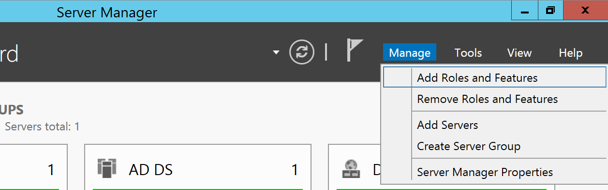
Next:
Role-based or feature-based installation. Click Next.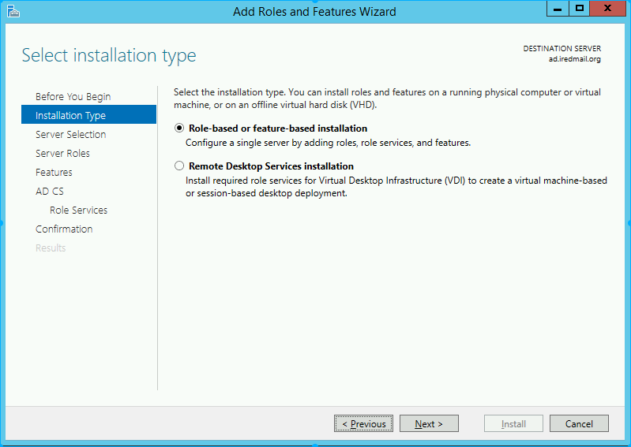

Active Directory Certificate Services from the list, and click Next.

Features page.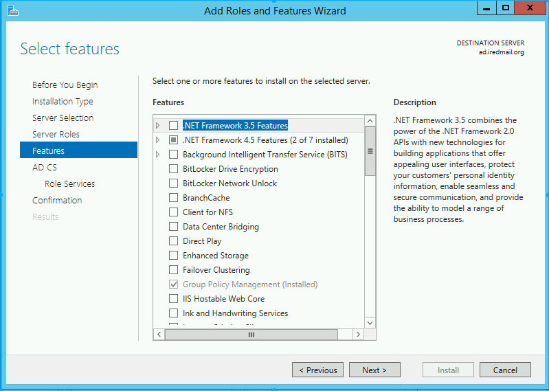
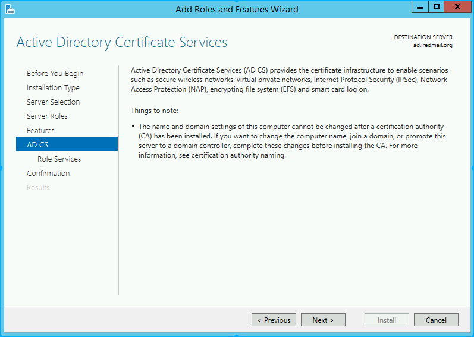
Certificate Authority and click Next.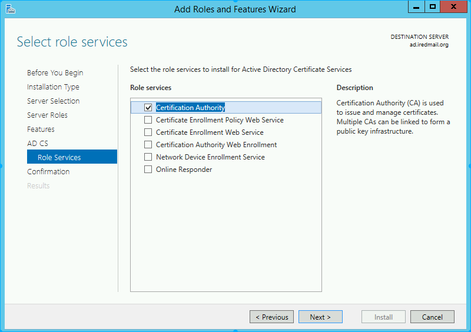
Install to install selected roles/features.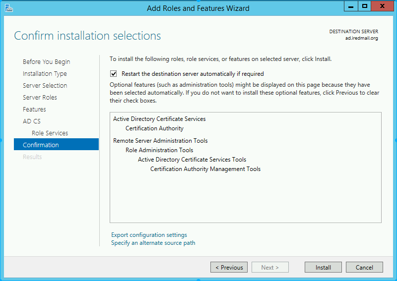
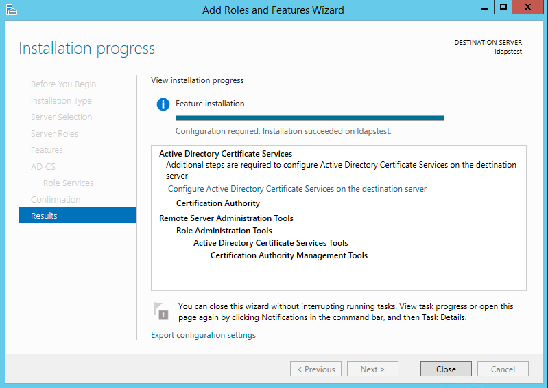
Now let’s create a certificate using AD CS Configuration Wizard, To open the wizard:
Start on bottom-left corner of your Windows OS, click Server Manager.
Alert Flag on top-right corner, click Configure Active Directory Certificate Services on the destincation server.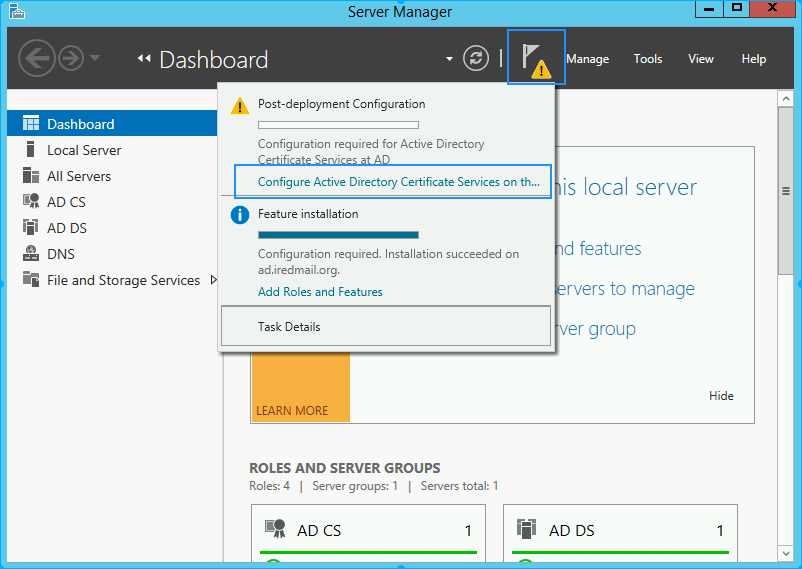
Next: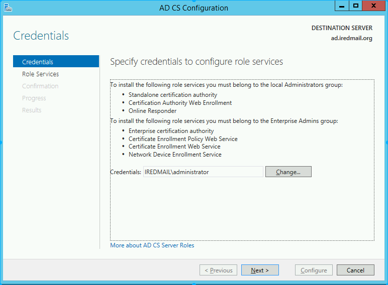
Certification Authority. Click Next.
Enterprise CA. Click Next.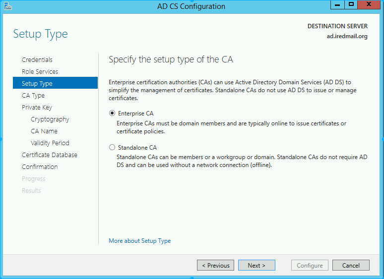
Root CA as the type of CA, click Next.
Create a new private key, Click Next.
SHA1 as the Hash algorithm, change key lenth to 4096, Click Next.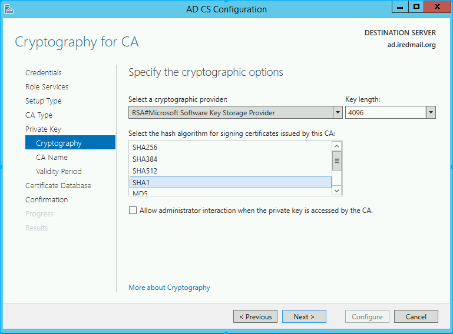

99 years. Click Next.
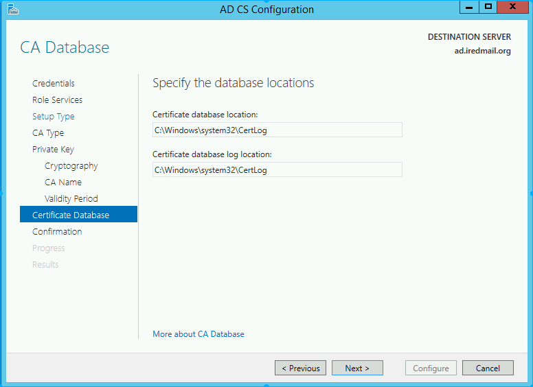
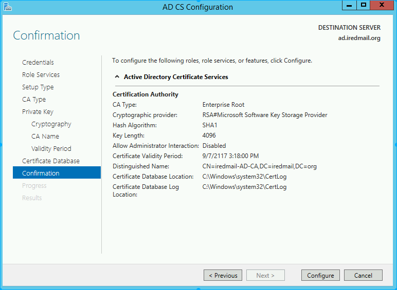
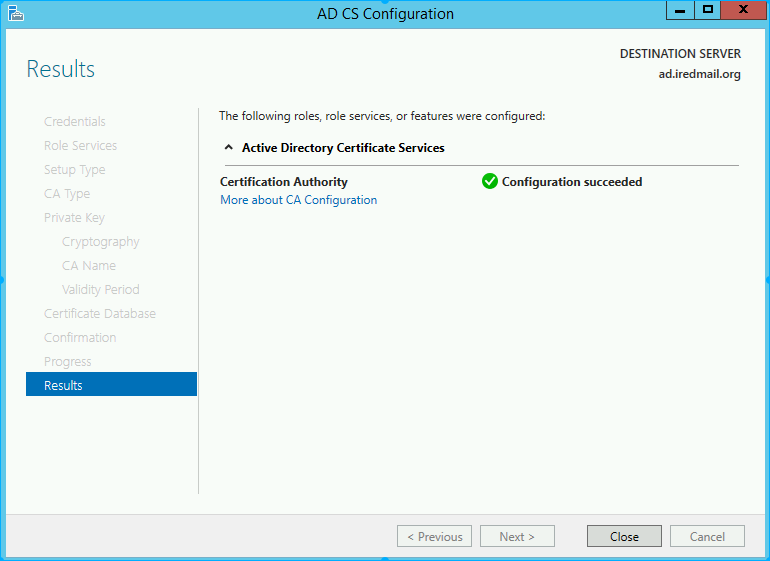
After restart system, we can connect to the LDAP server over SSL. Now let us try to connect to LDAP Server (with and without SSL) using the ldp.exe tool.
Connection strings for:
LDAP:\\ad.iredmail.org:389LDAPS:\\ad.iredmail.org:636
Click Start on bottom-left corner of your Windows OS,
Search on top-right corner, enter ldp.exe in the input box.


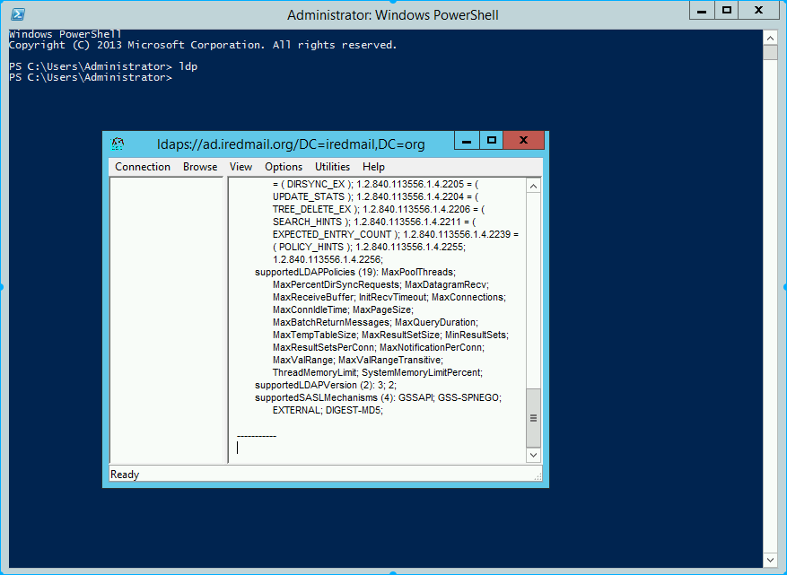